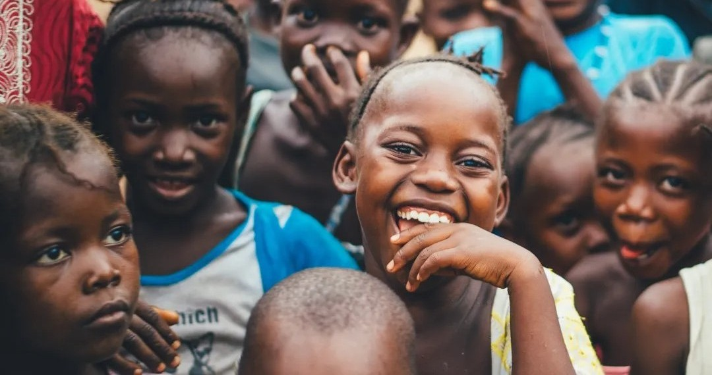
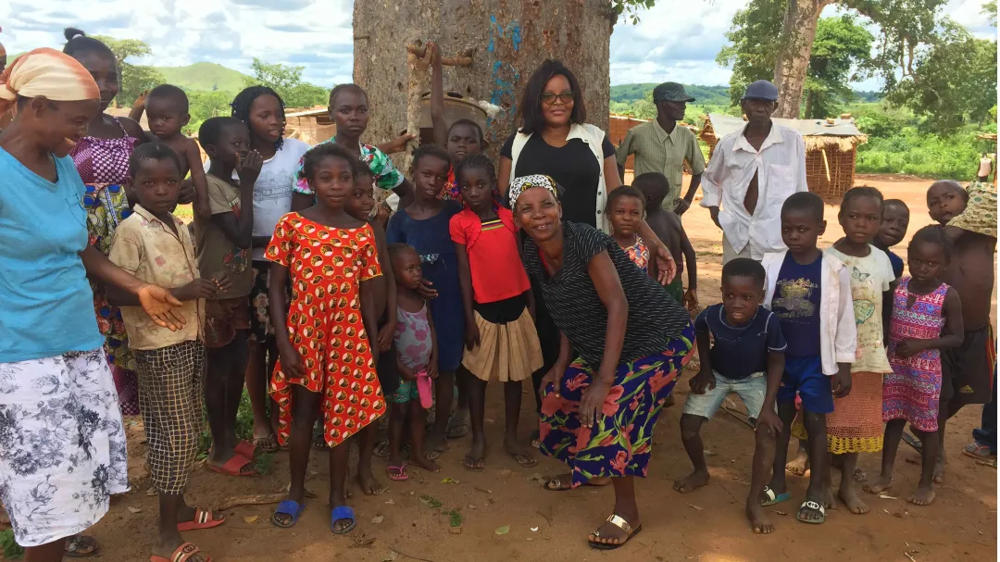

Inzameling
In de afgelopen jaren hebben wij veel kleding ontvangen en zijn wij ontzettend blij mee. Op Facebook vindt u alle foto's.
31 Maart 2019
In de afgelopen jaren hebben wij veel kleding ontvangen en zijn wij ontzettend blij mee. Op Facebook vindt u alle foto's.
31 Maart 2019
In Angola had de gele koorts al heel wat levens geëist in 2015 het merendeel waren kinderen. Dit over de 18 Provincies die Angola...
31 Maart 2019